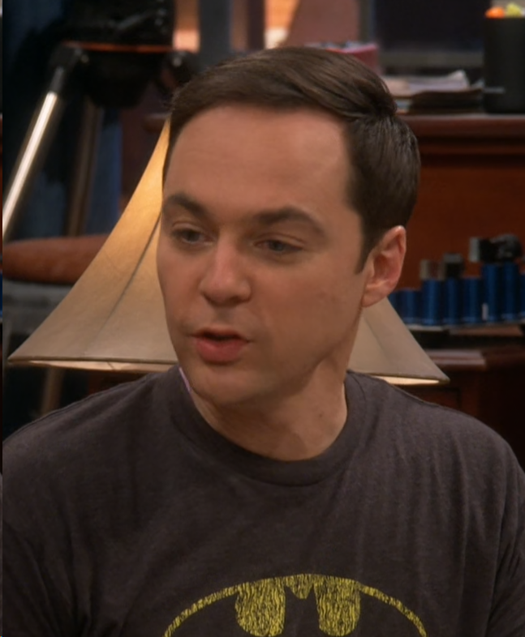
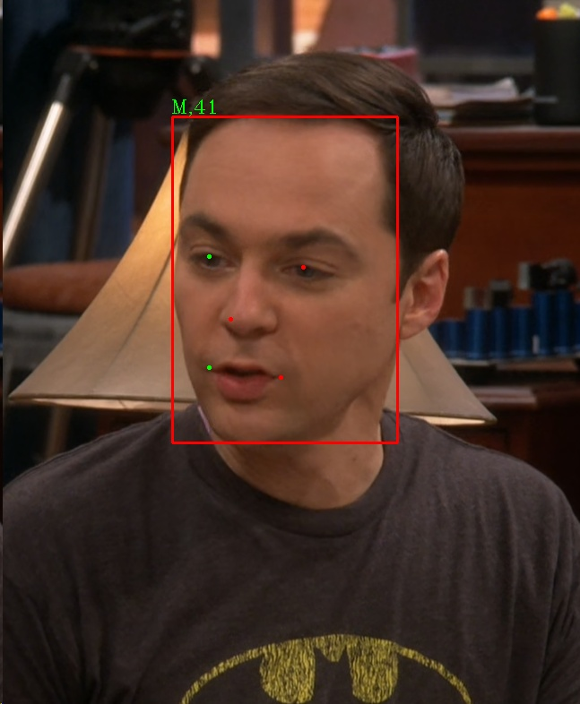

RK3588s NPU赋能：构建实时图片人脸识别系统
1 前言
1.1 项目背景
这个项目是我在大三下学期（2024年7月）的”深度学习方法与应用”课程中完成的课程设计。当时只是简单介绍了实现思路，完成了结课论文，没有详细记录完成过程。现在回过头来，重新整理并从零复现当时的完成流程。
记得那时NPU技术开始兴起，RK3588原本是用于电视机顶盒的产品线，得益于NPU对AI加速的能力，被开发板厂家改造成了类似树莓派的开发板。当时由于树莓派产能问题，价格被炒得翻倍，直接变成了理财产品。而国产的RK3588不仅性能强劲，还具备NPU加速能力，对标树莓派4B/5B，各方面性能都更胜一筹。RK3588s的6T算力在同价位产品中也是数一数二的存在（目前有算力更强的开发板如地瓜机器人的开发板算力好像上了10T）。
因此，我请老师采购了一块野火的鲁班猫4开发板，板载RK3588s，配备16G内存和256G的eMMC。实物图如下：

LubanCat-4板卡部分硬件资源表：
| 板卡名称 | LubanCat-4 |
|---|---|
| 电源接口 | Type-C5V@4A直流输入 |
| 主芯片 | RK3588S(四核A76+四核A55、Mali-G610、6T算力) |
| 内存 | LPDDR4X-4/8GB |
| 存储 | eMMC-32/64/128GB |
| 以太网 | 10/100/1000M自适应以太网口 |
| USB2.0 | Type-A接口x3(HOST) |
| USB3.0 | Type-A接口x1(HOST) |
| USB3.0 | Type-C接口x1(OTG)，固件烧录接口，DP显示（支持与其他屏幕进行多屏异显） |
| Debug串口 | 一路Debug串口，默认参数1500000-8-N-1 |
1.2 实现流程
首先现在PC上复现人脸识别系统的开源仓库，然后分别在PC和开发板上部署NPU的量化和推理环境，最后在开发板上部署推理模型，实现人脸识别功能。
1.3 任务刨析
人脸识别系统不同于单纯的人脸检测，需要对人脸进行特征提取，然后进行人脸比对。因此对于人脸识别任务，主流的方案是将其分解成两个任务，一个是人脸检测，一个是人脸特征提取。虽然人脸识别的技术已经非常成熟，但是当时在调研时，并没有发现可以直接使用的在该NPU案例，当时决定做这个系统时心里也很没底，因为要在NPU里面移植两个模型。模型之间是一个串行关系，即先进行人脸检测，然后进行人脸特征提取，最后进行人脸比对。当时在调研时，并没有发现可以直接使用的在该NPU案例，再提取特征。只要有一个模型移植失败或者出现其他问题，整个系统也做不出来。当时因为对RKNN的量化和推理框架不熟悉，代码细节上遇到了问题止步不前，但是好在最后发现了问题所在并成功解决。即使现在，有许多人在该开发板上做了相关的尝试，但也没看到体系化的教程，介绍完整的开发流程。
2 开源方案复现
人脸识别技术发展至今已相当成熟，github上有众多开源方案可供参考。然而，这些方案大多专注于单一任务，即人脸检测或人脸特征提取。在进行人脸识别系统开发之前，深入调研并选择合适的开源方案至关重要。考虑到RK3588s NPU的边缘部署特性，我们尤其关注模型的轻量化和推理效率。以下是我在调研过程中整理的一些主流且值得关注的人脸识别方案，我将其分为人脸检测和人脸识别（特征提取）两大部分。
2.1 人脸检测模型 (Face Detection)
人脸检测的目标是在图像中定位所有存在的人脸，并输出其精确的边界框（bounding box）。这一步是整个识别流程的起点。
MTCNN (Multi-task Cascaded Convolutional Networks)
MTCNN是一种多任务级联卷积神经网络，属于经典的级联网络，包含P-Net、R-Net、O-Net三步，逐步对人脸进行粗筛、细化和关键点定位。其开源仓库为原版MTCNN和pytorch版本MTCNN。当时一开始有去尝试复现这个pytorch方案，在量化RKNN模型的时候发现，这个方案是真的将网络分为三个部分，分别由pnet.pt、rnet.pt、onet.pt三个模型组成。那么移植成RKNN的时候，也需要将这三个权重转为RKNN模型。如果这样做的话，一方面工作量会翻了三倍，另外一方面不确定性也大大提高，只要有一个模型出了问题搞不定，这个人脸检测的任务就做不出来。这个方案果断放弃。
RetinaFace (Single-stage Dense Face Localisation in the Wild)
RetinaFace是一种单阶段密集人脸定位网络，通过多尺度特征融合和自适应特征选择，实现高精度的人脸检测。其开源仓库为RetinaFace。本系统使用的是这个模型。
CenterFace (A Simple and Strong Anchor-free Face Detector)
CenterFace是一种基于锚点自由的单阶段人脸检测网络，通过中心点回归和尺度自适应，实现高效的人脸检测。其开源仓库为CenterFace。
Yolo系列
这种简单的识别框选任务怎么能少得了Yolo系列呢？Yolo系列是单阶段目标检测算法，通过端到端的方式直接预测目标的边界框和类别。其开源仓库为Yolo。但是比较他不是专门用于人脸检测的模型，如果要使用Yolo还需要自己单独做一下训练，最终的效果也不一定有专门用于人脸识别的模型效果好。
BlazeFace
BlazeFace是一个基于BlazeBlock的轻量级人脸检测网络，利用深度可分离卷积和高效池化策略，实现了快速且精准的人脸检测。其开源代码可在BlazeFace找到。该模型由Google专为移动设备优化，旨在追求极致的速度和低功耗。该模块被集成到了MediaPipe中，可以在MediaPipe找到。
libfacedetection
libfacedetection是一个基于C++的轻量级人脸检测库，通过多尺度特征融合和自适应特征选择，实现高效的人脸检测。其开源仓库为libfacedetection。这种直接用C++实现的并不适合用于RKNN的移植，但是这种直接封装为C++的库，可以很方便的移植到开发板上的方式有点意思，记录一下后面玩一下。
2.2 人脸识别模型 (Face Recognition)
FaceNet
FaceNet是一个基于深度学习的人脸识别网络，通过端到端的方式直接预测人脸特征。其开源仓库为FaceNet。一开始复现的是这个开源仓库，但是我复现那会仓库管理有点混乱，最新的master代码有些配置文件丢失了复现不成功，后面发现insightface仓库更加方便好用，直接果断放弃。
ArcFace
ArcFace是一个基于深度学习的人脸识别网络，通过端到端的方式直接预测人脸特征。其开源仓库为ArcFace。insightface这个仓库并不仅仅有ArcFace人脸识别的模型，还有其他的一些人脸识别的模型，比如RetinaFace、CenterFace、BlazeFace等。而且代码还直接发布到了pypi上，可以直接安装使用。
2.3 复现insightface开源仓库
上面讲到insightface因为代码直接发布到了pypi上，可以直接安装使用，所以复现起来非常方便。该部分的内容主要是参照该仓库的教程进行复现的insightface quick start。该python包没有windows的安装包，所以这里使用的复现环境是wsl的Ubuntu 20.04系统。
安装insightface（在复现时，最新的版本是0.7.3）
pip install insightface==0.7.3如果你想使用CPU运行，请安装onnxruntime。建议使用CPU的环境，因为我们只是复现验证，不需要动用GPU进行加速。
pip install onnxruntime如果你想使用GPU运行，请安装onnxruntime-gpu
pip install onnxruntime-gpu示例测试test.py代码
import cv2
import numpy as np
import insightface
from insightface.app import FaceAnalysis
from insightface.data import get_image as ins_get_image
app = FaceAnalysis(providers=['CUDAExecutionProvider', 'CPUExecutionProvider'])
app.prepare(ctx_id=0, det_size=(640, 640))
# img = ins_get_image('t1')
img = cv2.imread('./database/Sheldon.png')
faces = app.get(img)
# print(faces[0].normed_embedding)
rimg = app.draw_on(img, faces)
cv2.imwrite("./t1_output.jpg", rimg)
需要在运行目录创建database文件夹，并放入一张包含自己面部自拍测试图片。
运行代码
python3 test.py第一次运行时，代码会自动下载buffalo_l的模型，关于buffalo_l的模型和其他相关模型的介绍，可以查看quick start。
运行结果如下图，左侧是原始图片，右侧是运行结果，会框选出人脸，并进行关键点定位，还显示预估年龄。


2.4 构建人脸识别系统
上面只是运行了调用了一个人脸检测的模型，一个完整的人脸识别系统的运行流程应该如下图所示。

简单的说就是需要先构建应该已知人脸的数据库，在监测时和数据库的人脸进行比对，然后进行余弦相似度的计算，在大于阈值的情况下给出相似度最大的人脸。
2.4.1 获取数据库人脸
该函数会从指定文件夹读取所有的照片，默认每张照片只有一个人脸，该人脸的文件名是该人脸的名字。
def load_faces_from_folder(folder, app):
features = []
file_names = []
faces_list = []
for filename in os.listdir(folder):
if filename.endswith((".png", ".jpg", ".jpeg")):
path = os.path.join(folder, filename)
img = cv2.imread(path)
if img is not None:
faces = app.get(img)
if faces:
feat = faces[0].normed_embedding # 假设每张图片中只有一张人脸
features.append(feat)
file_names.append(filename)
faces_list.append(faces[0])
return np.array(features, dtype=np.float32), file_names, faces_list2.4.2 相似度计算函数
传入要识别人脸的图像（可以包含不止一个图像），已知的人脸数据库和人脸名字。该函数会将图像的每一个人脸和数据库的每一个人脸进行比对，给出结果。
def find_similar_faces(target_img, database_features, database_filenames, app):
# 读取图像获取所有人脸信息
target_faces = app.get(target_img)
# 将数据库的每一个人脸和待检测的图像人脸进行匹配
for i, face in enumerate(target_faces):
face.name = "unknown" # 默认设置为unknown
target_feat = face.normed_embedding
# 与数据库中的每个人脸进行比对
for j in range(len(database_features)):
sim = np.dot(target_feat, database_features[j])
if sim > similarity_threshold:
face.name = database_filenames[j].split('.')[0]
break
return target_faces # 返回所有检测到的人脸2.4.3 完整识别单张图片的代码
在数据库database放入Sheldon图像，在运行代码的当前目录放入待识别的图像，命名为family.jpg。图像如下所示：
import os
import cv2
import numpy as np
from insightface.app import FaceAnalysis
def load_faces_from_folder(folder, app):
features = []
file_names = []
faces_list = []
for filename in os.listdir(folder):
if filename.endswith((".png", ".jpg", ".jpeg")):
path = os.path.join(folder, filename)
img = cv2.imread(path)
if img is not None:
faces = app.get(img)
if faces:
feat = faces[0].normed_embedding # 假设每张图片中只有一张人脸
features.append(feat)
file_names.append(filename)
faces_list.append(faces[0])
return np.array(features, dtype=np.float32), file_names, faces_list
def find_similar_faces(target_img, database_features, database_filenames, app):
# 读取图像获取所有人脸信息
target_faces = app.get(target_img)
# 将数据库的每一个人脸和待检测的图像人脸进行匹配
for i, face in enumerate(target_faces):
face.name = "unknown" # 默认设置为unknown
target_feat = face.normed_embedding
# 与数据库中的每个人脸进行比对
for j in range(len(database_features)):
sim = np.dot(target_feat, database_features[j])
if sim > similarity_threshold:
face.name = database_filenames[j].split('.')[0]
break
return target_faces # 返回所有检测到的人脸
def draw_on(img, faces):
import cv2
dimg = img.copy()
for i in range(len(faces)):
face = faces[i]
box = face.bbox.astype(int)
color = (0, 0, 255)
cv2.rectangle(dimg, (box[0], box[1]), (box[2], box[3]), color, 2)
if face.kps is not None:
kps = face.kps.astype(int)
for l in range(kps.shape[0]):
color = (0, 0, 255)
if l == 0 or l == 3:
color = (0, 255, 0)
cv2.circle(dimg, (kps[l][0], kps[l][1]), 1, color, 2)
# if face.gender is not None and face.age is not None:
# cv2.putText(dimg,'%s,%d'%(face.sex,face.age), (box[0]-1, box[1]-4),cv2.FONT_HERSHEY_COMPLEX,0.7,(0,255,0),1)
# 显示人脸名称（known或unknown）
cv2.putText(dimg,'%s'%(face.name), (box[2]-100, box[1]-10),cv2.FONT_HERSHEY_COMPLEX,0.5,(255,255,0),1)
return dimg
app = FaceAnalysis(name='buffalo_l') # 使用的检测模型名为buffalo_l
app.prepare(ctx_id=-1, det_size=(640, 640)) # ctx_id小于0表示用cpu预测，det_size表示resize后的图片分辨率
img = cv2.imread("family.jpg") # 读取图片
# 设置相似度阈值
similarity_threshold = 0.3 # 设定阈值，根据实际情况调整
# 提取数据库人脸向量
database_folder = "database"
database_features, database_filenames, database_faces = load_faces_from_folder(database_folder, app)
# 从图像中找到数据库里匹配的人脸索引
target_img_path = "family.jpg"
similar_faces = find_similar_faces(img, database_features, database_filenames, app)
# 标记相似度高于阈值的人脸
rimg = draw_on(img, similar_faces) # 将人脸框绘制到图片上
cv2.imwrite("multi_people_output_target.jpg", rimg) # 保存图片运行结果如下图，可以看到Sheldon的人脸被很好的识别出来，同时五个关键点也被标记。

至此，一个基本的人脸识别系统的雏形在PC上就完成了。
3 RK3588s NPU 移植部署
3.1 PC环境配置
在进行NPU部署之前，需要在PC上进行环境配置。PC的主要任务是进行模型的训练和将模型转换为RKNN格式，而RK3588s则负责调用RKNN模型进行推理。在本教程中，我们将直接使用insightface的onnx模型进行量化，无需进行训练步骤。
首先，参考野火官方文档RKNN-Toolkit2 使用文档进行PC环境的配置。我们使用的WSL版本是Ubuntu 20.04。
步骤1：安装相关库和软件包
在终端中执行以下命令安装必要的库和软件包：
sudo apt-get install libxslt1-dev zlib1g-dev libglib2.0 libsm6 libgl1-mesa-glx libprotobuf-dev gcc步骤2：安装RKNN-Toolkit2
使用pip安装RKNN-Toolkit2工具包：
pip install rknn-toolkit2 -i https://pypi.org/simple步骤3：验证安装
进入Python交互模式，导入RKNN类以验证安装是否成功：
python3
from rknn.api import RKNN如果没有任何报错信息，则说明安装成功。
以上步骤完成后，PC环境配置即告完成，接下来可以进行模型的转换和部署工作。
3.2 端侧部署思路
NPU的移植并不是简单的将模型转成进行替换就完事了，配套的前处理后处理的代码都需要迁移过来。现在的问题是怎么把detect_single.py放到RK3588上面并且在NPU上运行模型。观察detect_single.py的代码可以知道，对于普通人来说insightface用起来是很方便，但也由于insightface的集成度高，相应的前处理和后处理代码都封装到了python库里面。对于这个移植问题有两个思路，第一个整体上继续使用insightface这个库的框架，但是在调用人脸检测和识别的onnx模型时，将其替换为调用RKNN模型的代码；第二个方案是抽丝剥茧的方式，将在使用insightface这个库过程中用到的代码剥离出来，独立调用。当时我使用的是第二个方案，当时主要是想通过了解运行过程深入的理解一下模型的思路。现在回过头来看这也是一个正确的选择，和开始说的一样，这不是一个简单的模型替换的工作，rknn的使用逻辑和框架和onnx在某些细节上还是有很大的区别的，也正因为是这个区别，当时差点导致这个系统凉凉做不出来，好在当时和学长交流时灵光一现，想到了问题所在。由于对insightface抽丝剥茧的过程十分琐碎，这篇博客将不介绍具体的分析过程，直接给出转换代码和运行代码，后续再单独出一篇博客介绍这个分析过程。
3.3 调整SCRFD onnx模型
在2.3中提到，首次运行时代码会自动下载buffalo_l模型。通过分析代码可以得知，模型的默认下载路径为~/.insightface/models/buffalo_l。下图展示了下载的5个模型文件，分别是：1k3d68.onnx、2d106det.onnx、det_10g.onnx、genderage.onnx、w600k_r50.onnx。

结合在官方仓库对模型的介绍(Model Zoo)可以猜出来，1k3d68.onnx是用于人脸检测的模型，2d106det.onnx是人脸对齐（Alignment）的模型，det_10g.onnx是用于人脸检测的模型，genderage.onnx是用于性别年龄预测的模型，w600k_r50.onnx是用于人脸识别的模型。Model Zoo的介绍表格如下图所示。

因此需要量化的人脸检测模型是det_10g.onnx，检测和识别的量化过程都如下图所示，第一步pt转onnx模型insightface已经帮我们做了，insightface本身使用的就是onnx模型。由于不是所有的onnx模型都能直接转成rknn的，所以我们需要对onnx再进行一次转换操作，转成可以被转成rknn的onnx版本。在这一步主要的操作是规定输入和输出，并设置输入和输出的大小，并设置输入和输出的名称，还有设置onnx算子的版本。

我们首先可以使用下面的check_info.py代码看一下目前onnx模型的信息。需要将det_10g.onnx放到代码运行目录。
import onnx
# 加载模型
model = onnx.load('det_10g.onnx')
# 打印模型整体的 opset_version
print("Model's ONNX Opset Version:")
# model.opset_import 是一个列表，通常只有一个元素
for opset in model.opset_import:
print(f" Domain: {opset.domain if opset.domain else 'ai.onnx'}, Version: {opset.version}")
print("\nThe model expects input(s):")
for input in model.graph.input:
print(input.name, end=': ')
# 获取形状和数据类型
shape = [dim.dim_value for dim in input.type.tensor_type.shape.dim]
# 如果维度是动态的，可能显示为0或空
shape_str = [str(s) if s != 0 else '?' for s in shape]
data_type = input.type.tensor_type.elem_type
print(f"Shape: [{', '.join(shape_str)}] Type: {onnx.TensorProto.DataType.Name(data_type)}")
print("\nThe model has output(s):")
for output in model.graph.output:
print(output.name, end=': ')
shape = [dim.dim_value for dim in output.type.tensor_type.shape.dim]
shape_str = [str(s) if s != 0 else '?' for s in shape]
data_type = output.type.tensor_type.elem_type
print(f"Shape: [{', '.join(shape_str)}] Type: {onnx.TensorProto.DataType.Name(data_type)}")
print("\nOperators (Nodes) in the model graph:")
# 统计每种算子类型出现的次数
op_counts = {}
for node in model.graph.node:
op_type = node.op_type
op_counts[op_type] = op_counts.get(op_type, 0) + 1
# 如果你想打印每个算子的名称和类型
# print(f" Node Name: {node.name}, Op Type: {node.op_type}")
# 打印算子类型及其计数
for op_type, count in sorted(op_counts.items()):
print(f" Op Type: {op_type}, Count: {count}")运行结果如下所示，可以看到算子的版本是11，模型的输入不是固定的。RKNN要求的onnx算子版本是12，同时RKNN模型不能接受动态输入，需要手动设置一个静态输入进行固定。
Model's ONNX Opset Version:
Domain: ai.onnx, Version: 11
The model expects input(s):
input.1: Shape: [1, 3, ?, ?] Type: FLOAT
The model has output(s):
448: Shape: [12800, 1] Type: FLOAT
471: Shape: [3200, 1] Type: FLOAT
494: Shape: [800, 1] Type: FLOAT
451: Shape: [12800, 4] Type: FLOAT
474: Shape: [3200, 4] Type: FLOAT
497: Shape: [800, 4] Type: FLOAT
454: Shape: [12800, 10] Type: FLOAT
477: Shape: [3200, 10] Type: FLOAT
500: Shape: [800, 10] Type: FLOAT因此需要调用这个change_det_onnx.py的代码，将onnx的算子版本改为12，同时固定输入的大小为[1，3，640，640]，将修改后的模型保存为det_10g_rk.onnx
import onnx
from onnx import helper, TensorProto
# 加载 ONNX 模型
model = onnx.load("det_10g.onnx")
# 修改模型输入尺寸
input_tensor = model.graph.input[0]
input_tensor_type = input_tensor.type.tensor_type
input_tensor_type.shape.dim[0].dim_value = 1 # 例如，更改 batch size 为 1
input_tensor_type.shape.dim[2].dim_value = 640 # 例如，更改高度为 640
input_tensor_type.shape.dim[3].dim_value = 640 # 例如，更改宽度为 640
# 如果需要更改 opset version
model.opset_import[0].version = 12 # 更改到新的 opset 版本
# 保存修改后的模型
onnx.save(model, "det_10g_rk.onnx")3.4 调整ArcFace onnx模型
同样的思路，调用下面change_rec_onnx.py对人脸识别模型w600k_r50.onnx进行处理。
import onnx
from onnx import helper, TensorProto
# 加载 ONNX 模型
model = onnx.load("w600k_r50.onnx")
# 修改模型输入尺寸
input_tensor = model.graph.input[0]
input_tensor_type = input_tensor.type.tensor_type
input_tensor_type.shape.dim[0].dim_value = 1 # 例如，更改 batch size 为 1
input_tensor_type.shape.dim[2].dim_value = 112 # 例如，更改高度为 640
input_tensor_type.shape.dim[3].dim_value = 112 # 例如，更改宽度为 640
# 如果需要更改 opset version
model.opset_import[0].version = 12 # 更改到新的 opset 版本
# 保存修改后的模型
onnx.save(model, "w600k_r50_rk.onnx")3.5 量化模型
量化模型就是将onnx模型转为rknn模型。除了将模型转为rknn外，我们还可以在PC上模拟调用rknn模型，去查看rknn模型的是否能正常运行，以及前处理和后处理的步骤是否正确。这里其实就是这个系统部署在NPU上工作量最大的一步，主要工作也是去分析insightface库的运行机制，这部分的分析工作后续单独开一篇博客介绍，这里直接给出最终实现的onnx2rknn.py代码。
import os
import sys
import numpy as np
import cv2
from rknn.api import RKNN
from skimage import transform as trans
from numpy.linalg import norm as l2norm
class Face(dict):
def __init__(self, d=None, **kwargs):
if d is None:
d = {}
if kwargs:
d.update(**kwargs)
for k, v in d.items():
setattr(self, k, v)
# Class attributes
#for k in self.__class__.__dict__.keys():
# if not (k.startswith('__') and k.endswith('__')) and not k in ('update', 'pop'):
# setattr(self, k, getattr(self, k))
def __setattr__(self, name, value):
if isinstance(value, (list, tuple)):
value = [self.__class__(x)
if isinstance(x, dict) else x for x in value]
elif isinstance(value, dict) and not isinstance(value, self.__class__):
value = self.__class__(value)
super(Face, self).__setattr__(name, value)
super(Face, self).__setitem__(name, value)
__setitem__ = __setattr__
def __getattr__(self, name):
return None
@property
def embedding_norm(self):
if self.embedding is None:
return None
return l2norm(self.embedding)
@property
def normed_embedding(self):
if self.embedding is None:
return None
return self.embedding / self.embedding_norm
# Model file paths
DET_ONNX_MODEL = 'det_10g_rk.onnx'
DET_RKNN_MODEL = 'det_10g.rknn'
REC_ONNX_MODEL = 'w600k_r50_rk.onnx'
REC_RKNN_MODEL = 'w600k_r50.rknn'
INPUT_IMAGE_PATH = './family.jpg'
DATASET = './dataset.txt'
QUANTIZE_ON = True
def preprocess(img):
input_size = [640,640]
im_ratio = float(img.shape[0]) / img.shape[1]
model_ratio = float(input_size[1]) / input_size[0]
if im_ratio>model_ratio:
new_height = input_size[1]
new_width = int(new_height / im_ratio)
else:
new_width = input_size[0]
new_height = int(new_width * im_ratio)
det_scale = float(new_height) / img.shape[0]
resized_img = cv2.resize(img, (new_width, new_height))
det_img = np.zeros( (input_size[1], input_size[0], 3), dtype=np.uint8 )
det_img[:new_height, :new_width, :] = resized_img
return det_img, det_scale
def distance2bbox(points, distance, max_shape=None):
"""Decode distance prediction to bounding box.
Args:
points (Tensor): Shape (n, 2), [x, y].
distance (Tensor): Distance from the given point to 4
boundaries (left, top, right, bottom).
max_shape (tuple): Shape of the image.
Returns:
Tensor: Decoded bboxes.
"""
x1 = points[:, 0] - distance[:, 0]
y1 = points[:, 1] - distance[:, 1]
x2 = points[:, 0] + distance[:, 2]
y2 = points[:, 1] + distance[:, 3]
if max_shape is not None:
x1 = x1.clamp(min=0, max=max_shape[1])
y1 = y1.clamp(min=0, max=max_shape[0])
x2 = x2.clamp(min=0, max=max_shape[1])
y2 = y2.clamp(min=0, max=max_shape[0])
return np.stack([x1, y1, x2, y2], axis=-1)
def distance2kps(points, distance, max_shape=None):
"""Decode distance prediction to bounding box.
Args:
points (Tensor): Shape (n, 2), [x, y].
distance (Tensor): Distance from the given point to 4
boundaries (left, top, right, bottom).
max_shape (tuple): Shape of the image.
Returns:
Tensor: Decoded bboxes.
"""
preds = []
for i in range(0, distance.shape[1], 2):
px = points[:, i%2] + distance[:, i]
py = points[:, i%2+1] + distance[:, i+1]
if max_shape is not None:
px = px.clamp(min=0, max=max_shape[1])
py = py.clamp(min=0, max=max_shape[0])
preds.append(px)
preds.append(py)
return np.stack(preds, axis=-1)
def nms(dets):
nms_thresh = 0.4
thresh = nms_thresh
x1 = dets[:, 0]
y1 = dets[:, 1]
x2 = dets[:, 2]
y2 = dets[:, 3]
scores = dets[:, 4]
areas = (x2 - x1 + 1) * (y2 - y1 + 1)
order = scores.argsort()[::-1]
keep = []
while order.size > 0:
i = order[0]
keep.append(i)
xx1 = np.maximum(x1[i], x1[order[1:]])
yy1 = np.maximum(y1[i], y1[order[1:]])
xx2 = np.minimum(x2[i], x2[order[1:]])
yy2 = np.minimum(y2[i], y2[order[1:]])
w = np.maximum(0.0, xx2 - xx1 + 1)
h = np.maximum(0.0, yy2 - yy1 + 1)
inter = w * h
ovr = inter / (areas[i] + areas[order[1:]] - inter)
inds = np.where(ovr <= thresh)[0]
order = order[inds + 1]
return keep
def draw_on(img, faces):
dimg = img.copy()
for i in range(len(faces)):
face = faces[i]
box = face.bbox.astype(int)
color = (0, 0, 255)
cv2.rectangle(dimg, (box[0], box[1]), (box[2], box[3]), color, 2)
if face.kps is not None:
kps = face.kps.astype(int)
for l in range(kps.shape[0]):
color = (0, 0, 255)
if l == 0 or l == 3:
color = (0, 255, 0)
cv2.circle(dimg, (kps[l][0], kps[l][1]), 1, color,2)
if face.name is not None:
cv2.putText(dimg,'%s'%(face.name), (box[0]-1, box[1]-4),cv2.FONT_HERSHEY_COMPLEX,0.7,(0,255,0),1)
return dimg
def retinaface_post_process(net_outs, det_scale=1.0):
"""
处理人脸检测网络的输出
Args:
net_outs: 网络输出
det_scale: 检测缩放比例
Returns:
det_boxes: 检测到的人脸框
kpss: 人脸关键点
"""
input_height = 640
input_width = 640
fmc = 3
_feat_stride_fpn = [8, 16, 32]
_num_anchors = 2
use_kps = True
center_cache = {}
det_thresh = 0.4
scores_list = []
bboxes_list = []
kpss_list = []
for idx, stride in enumerate(_feat_stride_fpn):
scores = net_outs[idx]
bbox_preds = net_outs[idx+fmc]
bbox_preds = bbox_preds * stride
if use_kps:
kps_preds = net_outs[idx+fmc*2] * stride
height = input_height // stride
width = input_width // stride
K = height * width
key = (height, width, stride)
if key in center_cache:
anchor_centers = center_cache[key]
else:
anchor_centers = np.stack(np.mgrid[:height, :width][::-1], axis=-1).astype(np.float32)
anchor_centers = (anchor_centers * stride).reshape( (-1, 2) )
if _num_anchors>1:
anchor_centers = np.stack([anchor_centers]*_num_anchors, axis=1).reshape( (-1,2) )
if len(center_cache)<100:
center_cache[key] = anchor_centers
pos_inds = np.where(scores>=det_thresh)[0]
bboxes = distance2bbox(anchor_centers, bbox_preds)
pos_scores = scores[pos_inds]
pos_bboxes = bboxes[pos_inds]
scores_list.append(pos_scores)
bboxes_list.append(pos_bboxes)
if use_kps:
kpss = distance2kps(anchor_centers, kps_preds)
kpss = kpss.reshape( (kpss.shape[0], -1, 2) )
pos_kpss = kpss[pos_inds]
kpss_list.append(pos_kpss)
scores = np.vstack(scores_list)
scores_ravel = scores.ravel()
order = scores_ravel.argsort()[::-1]
bboxes = np.vstack(bboxes_list) / det_scale
if use_kps:
kpss = np.vstack(kpss_list) / det_scale
pre_det = np.hstack((bboxes, scores)).astype(np.float32, copy=False)
pre_det = pre_det[order, :]
keep = nms(pre_det)
det = pre_det[keep, :]
if use_kps:
kpss = kpss[order,:,:]
kpss = kpss[keep,:,:]
else:
kpss = None
return det, kpss
arcface_dst = np.array(
[[38.2946, 51.6963], [73.5318, 51.5014], [56.0252, 71.7366],
[41.5493, 92.3655], [70.7299, 92.2041]],
dtype=np.float32)
def estimate_norm(lmk, image_size=112,mode='arcface'):
assert lmk.shape == (5, 2)
assert image_size%112==0 or image_size%128==0
if image_size%112==0:
ratio = float(image_size)/112.0
diff_x = 0
else:
ratio = float(image_size)/128.0
diff_x = 8.0*ratio
dst = arcface_dst * ratio
dst[:,0] += diff_x
tform = trans.SimilarityTransform()
tform.estimate(lmk, dst)
M = tform.params[0:2, :]
return M
def norm_crop(img, landmark, image_size=112, mode='arcface'):
M = estimate_norm(landmark, image_size, mode)
warped = cv2.warpAffine(img, M, (image_size, image_size), borderValue=0.0)
return warped
def load_face_database(folder="database", det_rknn=None, rec_rknn=None):
"""
Load face database
Args:
folder (str): Path to face image database folder
det_rknn: Face detection model
rec_rknn: Face recognition model
Returns:
list: List containing face information
"""
face_database = []
for filename in os.listdir(folder):
if filename.endswith((".png", ".jpg", ".jpeg")):
path = os.path.join(folder, filename)
img = cv2.imread(path)
if img is not None:
resize_img, det_scale = preprocess(img)
resize_img_4d = np.expand_dims(resize_img, axis=0)
net_outs = det_rknn.inference(inputs=[resize_img_4d], data_format='nhwc')
det_boxes, kpss = retinaface_post_process(net_outs, det_scale)
for i in range(det_boxes.shape[0]):
bbox = det_boxes[i, 0:4]
det_score = det_boxes[i, 4]
kps = None
if kpss is not None:
kps = kpss[i]
face = Face(bbox=bbox, kps=kps, det_score=det_score)
aimg = norm_crop(img, landmark=kps, image_size=112)
aimg_4d = np.expand_dims(aimg, axis=0)
face.embedding = rec_rknn.inference(inputs=[aimg_4d], data_format='nhwc')[0].flatten()
face.name = filename.split('.')[0]
face_database.append(face)
return face_database
def detect_faces(img, det_rknn, rec_rknn):
"""
Detect faces in image and extract features
Args:
img: Input image
det_rknn: Face detection model
rec_rknn: Face recognition model
Returns:
list: List of detected faces
"""
resize_img, det_scale = preprocess(img)
resize_img_4d = np.expand_dims(resize_img, axis=0)
net_outs = det_rknn.inference(inputs=[resize_img_4d], data_format='nhwc')
det_boxes, kpss = retinaface_post_process(net_outs, det_scale)
faces = []
for i in range(det_boxes.shape[0]):
bbox = det_boxes[i, 0:4]
det_score = det_boxes[i, 4]
kps = kpss[i] if kpss is not None else None
face = Face(bbox=bbox, kps=kps, det_score=det_score)
aimg = norm_crop(img, landmark=kps, image_size=112)
aimg_4d = np.expand_dims(aimg, axis=0)
face.embedding = rec_rknn.inference(inputs=[aimg_4d], data_format='nhwc')[0].flatten()
faces.append(face)
return faces
def recognize_faces(faces, face_database, threshold=0.5):
"""
Recognize faces
Args:
faces: List of faces to recognize
face_database: Face database
threshold: Recognition threshold
Returns:
list: List of recognized faces
"""
# Convert database face features to matrix
target_feats = []
for face in face_database:
target_feats.append(face.normed_embedding)
target_feats = np.array(target_feats, dtype=np.float32)
# Recognize each face
for face in faces:
sims = np.dot(target_feats, face.normed_embedding)
best_match_idx = int(sims.argmax())
max_similarity = sims[best_match_idx]
if max_similarity > threshold:
face.name = face_database[best_match_idx].name
print(f"Recognized: {face.name} Similarity: {max_similarity:.2f}")
else:
face.name = "unknown"
print(f"Unknown face detected, max similarity: {max_similarity:.2f}")
print(f"All similarities for this face: {sims}")
return faces
if __name__ == '__main__':
# Create RKNN objects
det_rknn = RKNN(verbose=True)
rec_rknn = RKNN(verbose=True)
# Configure models
print('--> Config model')
det_rknn.config(mean_values=[[0, 0, 0]], std_values=[[255, 255, 255]], target_platform='rk3588')
rec_rknn.config(mean_values=[[0, 0, 0]], std_values=[[255, 255, 255]], target_platform='rk3588')
print('done')
# Load ONNX models
print('--> Loading model')
ret = det_rknn.load_onnx(model=DET_ONNX_MODEL)
ret *= rec_rknn.load_onnx(model=REC_ONNX_MODEL)
if ret != 0:
print('Load model failed!')
exit(ret)
print('done')
# Build models
print('--> Building model')
ret = det_rknn.build(do_quantization=QUANTIZE_ON, dataset=DATASET)
ret *= rec_rknn.build(do_quantization=QUANTIZE_ON, dataset=DATASET)
if ret != 0:
print('Build model failed!')
exit(ret)
print('done')
# Export RKNN models
print('--> Export rknn model')
ret = det_rknn.export_rknn(DET_RKNN_MODEL)
ret *= rec_rknn.export_rknn(REC_RKNN_MODEL)
if ret != 0:
print('Export rknn model failed!')
exit(ret)
print('done')
# Init runtime environment
print('--> Init runtime environment')
ret = det_rknn.init_runtime()
ret *= rec_rknn.init_runtime()
if ret != 0:
print('Init runtime environment failed!')
exit(ret)
print('done')
# Load face database
face_database = load_face_database(folder="database", det_rknn=det_rknn, rec_rknn=rec_rknn)
# Process input image
print(f'--> Loading and processing image: {INPUT_IMAGE_PATH}')
current_img = cv2.imread(INPUT_IMAGE_PATH)
if current_img is None:
print(f"Error: Could not load image from {INPUT_IMAGE_PATH}")
sys.exit(-1)
# Detect faces
current_image_faces = detect_faces(current_img, det_rknn, rec_rknn)
if len(current_image_faces) > 0:
# Recognize faces
current_image_faces = recognize_faces(current_image_faces, face_database)
else:
print("No faces detected in input image")
# Draw results
draw_img = draw_on(current_img, current_image_faces)
output_image_path = 'recognized_output.jpg'
cv2.imwrite(output_image_path, draw_img)
print(f"Processed image saved to: {output_image_path}")
det_rknn.release()运行onnx2rknn.py代码时，需要首先在运行目录创建一个dataset.txt的文件，文件的内容如下：
database/Sheldon.png运行结束后，本地会生成一个名为recognized_output.jpg的图像在运行文件夹，结果如下图所示。

3.6 鲁班猫（RK3588s）环境配置
接下来的步骤便是将量化好后的rknn模型放到鲁班猫上运行，这里需要配置鲁班猫的环境。使用RK3588s的板载NPU有两种方式，一种时使用RKNN Server远程调用开发板上的Runtime环境，这种方式的目的主要是为了方便调试；另外一种是在板卡上直接安装RKNN Toolkit Lite2，直接在开发板本地运行和调用rknn模型，这里使用的是这种方式。这里参考的安装教程是RKNN Toolkit Lite2安装教程。
因为我的PC版本rknn-toolkit2是通过pip安装的，这里先看一下rknn-toolkit2的版本，这里可以看到版本是2.3.2。
安装相关依赖和软件包
pip3 install wheel
sudo apt-get install -y python3-opencv
sudo apt-get install -y python3-numpy
sudo apt -y install python3-setuptools手动安装Toolkit Lite2的python库
该库的安装包位于官方仓库airockchip/rknn-toolkit2的rknn-toolkit-lite2\packages目录下，选择适合自己python版本的库安装，我的系统默认装的是python3.9。为了避免出现一些奇奇怪怪的问题，rknn_toolkit_lite2的版本号要和PC安装的rknn-toolkit2版本号对应上，如果对不上的话，可以选择升级PC的版本也可以去github的历史仓库下载旧版本的rknn_toolkit_lite2库。
pip3 install rknn_toolkit_lite2-2.3.2-cp39-cp39-manylinux_2_17_aarch64.manylinux2014_aarch64.whl替换librknnrt.so库
librknnrt.so库也需要更新为和rknn-toolkit2同版本的动态库，该动态库文件位于官方仓库airockchip/rknn-toolkit2的rknpu2\runtime\Linux\librknn_api\aarch64目录下，将该文件复制到开发板的/usr/lib/目录下。
硬件环境展示
硬件使用的是鲁班猫4摄像头和显示屏套装，我买这个套装主要是为了后面方便一体化的机械结构设计。如果只是正常的开发设计的话，使用普通的HDMI显示屏和USB摄像头，是最方便的选择。使用野火的IMX415摄像头和7寸MIPI屏幕需要参考官方的摄像头和屏幕的教程配置启用一下对应的设备树。下图是本设备的套装的实物图。

| 设备 | 详情 |
|---|---|
| 主控 | 鲁班猫4 （16+128G） |
| 显示屏 | 7寸MIPI屏 |
| 摄像头 | IMX415 MIPI摄像头 |
3.7 运行代码
安装代码依赖的库
pip3 install scikit-image
pip3 install numpy==1.23.5后续内容烂尾，由于个人时间和研究方向原因，以及设备回收给了实验室，将不对运行代码进行重构和分析，如想要RK3588s真机运行代码，请参考下面仓库开源的内容，